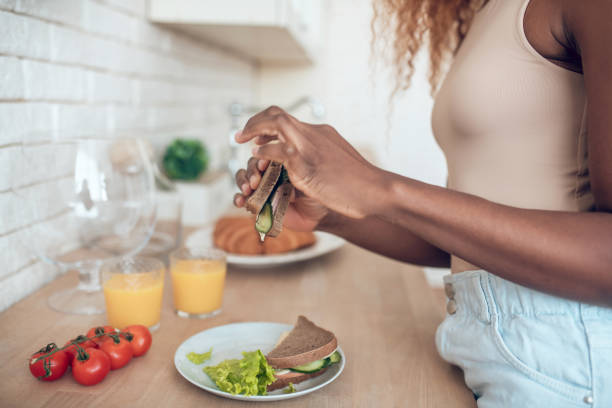

My name is Damukoli Ufuoma Mercy Osamudiawhen Angel. I am a Nigerian and i hail from Delta state. I am 19 Years old. I am a driven individual with a strong passion for learning, i'm actively involved in training programs to further my expertise in innovative tech skills. I am also passionate about impacting the world through books, I am the author of "The poor cobbler and the elves" a book designed to show the importance of diligence and humility for children. I am also a key member of Teen Guide Africa, an NGo committed to raising accountable young leaders in Africa. I am currently enrolled in the second cohort of the The Elevate Them program hosted by The Pan-Atlantic University
National Open University of Nigeria(in view)
|
|
PROGRAM OFFICER/SOCIAL MEDIA MANAGER TeenGuide Africa Jan 2024 - present
UI/UX DESIGNER Rodi Media Aug 2022 - present
|
|  |  |
 |
| I love how cooking allows me to be creative and de-stress. I usually experiment with new recipes and enjoy the process of creating something delicious from scratch. | I find reading to be an amazing way to escape to diffrent worlds and expand my imagination. I've recently accomplished writing a challenging book series. | It's exciting to think outside the box and create something unique and useful for the home. I'm passionate about coming up with creative solutions and innovative projects. |